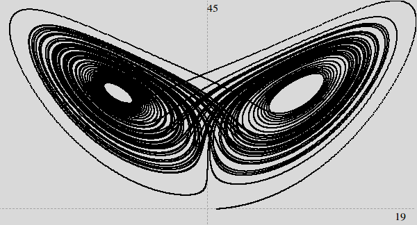

This project uses a potential function to dictate the motion of particles. The potential function changes the acceleration for each discretized time step of every particle. Particles repel eachother at close distances preventing overlapping collisions. Currently there is no friction or damping. This project was written in Python and uses Tkinter for graphics.

This repository contains multiple small graphics projects. Some projects were created for my Graphics class, others are independent projects. All programs require FPT to work (http://legacy.lclark.edu/~jeff/ available here: FPT).
These projects are from my independent study during the spring of 2017. I am following the book "Computational Physics" by Nicholas Giordano. Most of the projects involve numerically solving a set of differential equations using Eulers method or the Euler Cromer method.